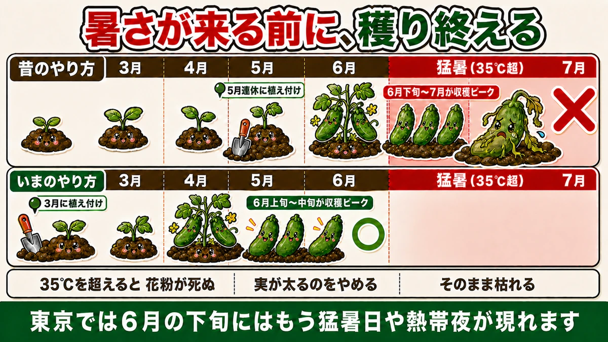
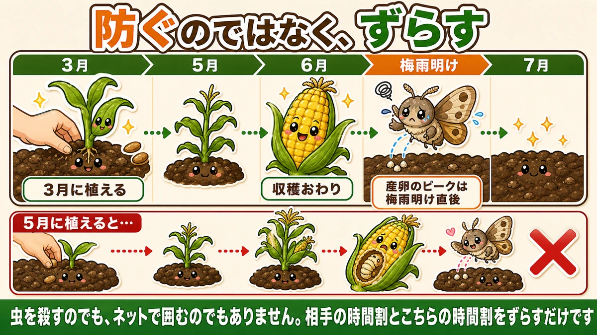
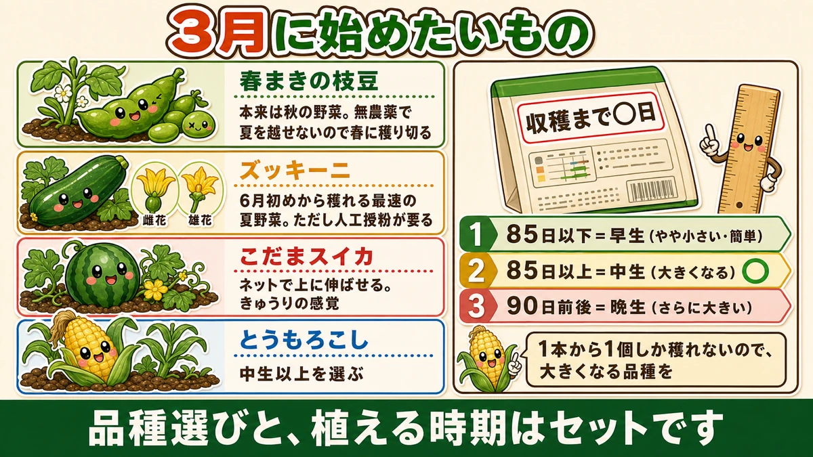

3月にまく・植える野菜｜夏野菜の前倒しと保温・とうもろこしと枝豆の早まき・3月の畑の管理
どうも、8150（えいこう）です🌱 家庭菜園歴8年、理科の教員免許を持っていて、有機・無農薬で野菜を育てています。
📖 この記事の目次
この記事で分かること
- 最近は、夏の猛暑が早く来るようになりました。そのため、夏野菜を少し早め（前倒し）に始めて、暑くなる前に収穫のピークを迎える考え方が広がっています。
- ただし、3月はまだ霜の降りる朝があります。前倒しで始めるには、トンネルで保温するか、家の中で苗を育てるのが前提です。
- とうもろこしは、早く始めると、実を食べる虫（アワノメイガ）が増える前に収穫できます。
- 春まきの枝豆も、6月中にとれれば、カメムシなどの虫が増える前に逃げきれます。
- ズッキーニは、夏野菜の中でいちばん早くとれる野菜の1つです。
- すでに畑にあるにんにくや玉ねぎは、3月が追肥の締めくくりの時期です。
3月になると、日中は15度を超えるような暖かい日も出てきて、「そろそろ何か始めたいな」とうずうずしてきますよね。
でも、朝はまだ霜が降りる日もあって、「夏野菜って、まだ早いんじゃないの？」と迷う方も多いと思います。
そのとおりで、3月に夏野菜をそのまま畑に植えるのは、まだ早いです。ただ、ひと工夫して保温すれば、3月から始められる野菜もあります。そして、早く始めることには、ちゃんとした理由があるんです。
この記事では、3月に何をどう始めるか、すでに畑にある野菜の世話も含めて、順番に書いていきます。

早見：3月の畑の基本（ひと目で分かる目安）
3月に始められるもの
- とうもろこし：トレイやポットで苗を作るか、トンネルの中に直まき
- 枝豆（春まき）：ポットで苗を作るか、暖かくなってから直まき
- ズッキーニ：トンネルの中で育てる。早ければ5〜6月から収穫
- こだまスイカ：トンネルの中で、寒さと湿気から守る
- トマト・ナス・きゅうり・ピーマンの苗づくり：家の中や温かい場所で
- 葉物（小松菜・ほうれん草・リーフレタスなど）・根菜（にんじん・かぶ・ラディッシュなど）：暖かくなるにつれて育ちが早くなる
3月にやる管理
- にんにく：追肥（一般地では2月中旬〜3月上旬が2回目の目安）、乾いていたら水やり、草とり
- 玉ねぎ：最後の追肥（止め肥）。肥料の種類で時期を変える
- スナップえんどう・そら豆：つるや枝が伸びてくるので、支柱やネットの準備
- じゃがいも：植えつけの時期（地域による）
覚えておきたい数字
- とうもろこしの発芽にちょうどいい温度：25〜30度
- とうもろこしが育つのにちょうどいい温度：20〜30度
- 露地（保温なし）でのとうもろこしの種まき：一般的な地域では4月から
- ズッキーニ：芽が出てから60日くらいでとれる、という説明があります
- 夏野菜の苗づくり：基本は2か月くらい。時期によっては90日かかることも
なぜ夏野菜を前倒しにするのか
猛暑が早く来るようになった
これまで、夏野菜の植えつけは、暖かくなる4月から5月の連休にかけてがピークでした。
ところが最近は、6月の終わりごろには、もう35度を超える猛暑日や、夜も25度を下回らない熱帯夜が来るようになりました。
夏野菜といっても、暑すぎるのは苦手です。トマトは実が割れやすくなり、ナスやピーマンは花が落ちやすくなります。きゅうりも株が早く疲れてしまいます。人間がばてるのと同じように、野菜もばてるんですね。
だから、収穫のピークを前に持ってくる
そこで、栽培の開始を1か月くらい前倒しにして、本格的な暑さが来る前に、収穫のピークを迎えるようにする、という考え方が出てきました。
3月に始めて、5月から7月の初めにかけてしっかりとって、真夏に入るころには一段落させる。そんなイメージです。
ただし、3月はまだ寒い
ここが大事なところです。前倒しといっても、3月に何もせずに夏野菜を畑に植えたら、寒さでやられてしまいます。
前倒しで始めるには、次のどちらかが前提です。
- 家の中や温かい場所で、ポットやトレイに苗を作る
- 畑に、透明なビニールトンネルをかけて保温し、その中にまく
保温できない場合は、無理に3月に始めなくて大丈夫です。一般的な時期（4月から5月の連休ごろ）に植えても、夏野菜はちゃんと育ちます。
作業の手順
ここからは、3月に始めるときの流れを、順番に書いていきます。
手順1：何を前倒しにするか決める
3月に全部の夏野菜を始める必要はありません。前倒しの効果が大きいのは、次のような野菜です。
- とうもろこし：アワノメイガという虫が増える前に収穫できる
- 枝豆：カメムシなどが増える前に収穫できる
- ズッキーニ：早くとれて、暑くなる前に一段落できる
トマトやナス、ピーマンは、3月は苗づくりの時期と考えて、畑に植えるのは4月の終わりから5月にする、という方も多いです。
手順2：保温の方法を決める
前倒しの方法は、大きく2つです。
- 苗を作る：トレイやポットに種をまいて、家の中の日当たりのよい窓辺や、ビニールハウス、簡易な温室で育てる
- トンネルの中に直まき：畑に土を作って、透明なビニールトンネルをかけ、地温を上げてからまく
どちらも、昼と夜の温度差に気をつけます。
トンネルの張り方
ビニールトンネルは、ホームセンターで売っているトンネル用の支柱（弓のような形の細い棒）と、トンネル用のビニールで作れます。
- 畝の両側に、支柱を50cmくらいの間かくで差していく
- その上からビニールをかぶせる
- ビニールのすそを、土をかぶせたり、重しを置いたりして押さえる
- 両端は、ビニールをまとめてひもで結び、杭にとめる
種をまいたり苗を植えたりする1週間くらい前に張っておくと、そのあいだに土が温まって、芽が出やすくなります。畝に黒いマルチを張ってからトンネルをかけると、さらに地温が上がりやすくなります。
3月は風の強い日も多いので、すそはしっかり押さえてください。風でビニールがあおられて飛ぶと、中の苗が一気に冷えてしまいます。
手順3：晴れが続く日を狙ってまく
3月に種をまくときは、天気予報を見て、晴れて暖かい日が3日くらい続きそうなタイミングを狙ってまきます。
まいてすぐに冷たい雨が続くと、土の温度が下がって、種が芽を出せずに腐ってしまうことがあります。晴れが続けば、トンネルの中の土がしっかり温まって、芽が出やすくなります。
手順4：トンネルは、昼に換気する
ビニールトンネルは、晴れた日の昼間は、中がとても暑くなります。外が15度くらいでも、トンネルの中は30度、40度を超えることもあります。
- 晴れた日の昼は、すそを少し開けて換気する
- 夕方には閉めて、夜の冷えこみから守る
- 曇りや雨の日は、閉めたままでも大丈夫なことが多い
穴のあいたトンネル用のビニールを使うと、換気の手間が少し減ります。
換気を忘れると、せっかく出た芽が暑さで焼けてしまうことがあるので、晴れの日は特に気をつけてください。
手順5：とうもろこしの苗を作る
とうもろこしは、本来、暖かくなってから畑に直接まく野菜です。一般的な地域では、保温しないで畑にまくなら4月からになります。
3月に始めるなら、セルトレイやポットに種をまいて、暖かい場所で苗を作ります。
- 発芽にちょうどいい温度は25〜30度。夜も冷えない場所に置く
- ハウスやトンネルの中にトレイを置くか、家の中の暖かい場所で育てる
- 芽が出たら、日によく当てる
- 本葉が出てきたら、トンネルをかけた畑に植える
とうもろこしは、肥料が大好きな野菜です。植える畑には、早めにたっぷり肥料を入れて、準備しておいてください。
手順6：とうもろこしを植える・間引く
畑に直接まく場合は、1か所に3〜4粒ずつまいて、芽が出たら元気なものを残して間引きます。
とうもろこしは、1列に長く植えるより、2列以上にまとめて植えたほうが、花粉が雌花にかかりやすくなって、実がよく詰まります。
手順7：とうもろこしの追肥
とうもろこしの追肥は、育つ段階に合わせて行います。
- 本葉が出て、株が育ち始めたころ
- てっぺんに雄花（穂）が出てきたころ
- 雌花（ひげ）が出てきたころ
この3回を基本とする説明があります。2回くらいでいい、という説明もあります。畑の土の肥えぐあいや、元肥の量によっても変わるので、葉の色を見ながら調整してください。

手順8：枝豆の苗を作る・まく
春まきの枝豆も、早く始めると虫の被害を減らしやすい野菜です。
- 3月はポットで苗を作り、暖かくなってから畑に植える
- 直まきするなら、地温が上がる4月ごろから
- まいたあとは、鳥に食べられないように、不織布やネットをかけておく
枝豆も、発芽には暖かさが必要です。寒い時期にまくと、芽が出るまでに時間がかかったり、種が腐ったりします。
枝豆をまくときのこつ
- 1か所に2〜3粒ずつまく
- 種をまいたら、上から手で土を押さえて、種と土をしっかりくっつける（水を吸いやすくなり、芽が出やすくなります）
- 本葉が出てきたら、元気な株を残して1〜2本に間引く
- 肥料は控えめに。肥料が多いと、葉ばかり茂って実がつきにくくなる
枝豆は、まく粒の数と、間引いて残す本数で、とれる量が変わってきます。込みすぎると株が細くなり、さやのつきも悪くなるので、思いきって間引いてください。
手順9：ズッキーニをまく・植える
ズッキーニは、夏野菜の中でいちばん早く収穫できる野菜の1つです。きゅうりやトマトよりもひと足早く、春いちばんにとれます。
- 寒さと湿気に弱いので、ビニールトンネルの中で育てる
- 晴れが続く暖かい日を狙ってまく
- 芽が出てから60日くらいで収穫できる、という説明がある
3月にまけば5月から、順調なら6月の初めから収穫できる、と言われます。
ズッキーニの花と受粉
ズッキーニには、雄花と雌花があります。雌花は、花のつけ根に小さなズッキーニのようなふくらみがついているほうです。
まだ寒い時期は、花粉を運んでくれる虫が少ないので、自然に受粉しにくいことがあります。朝のうちに、雄花をとって花びらを外し、雌花のまん中にちょんちょんと花粉をつけてあげると、実がつきやすくなります。
ズッキーニは、とり遅れると一気に大きくなって、皮がかたくなります。長さ20cmくらいを目安に、早めにとってください。
手順10：こだまスイカをまく・植える
こだまスイカ（小玉スイカ）も、トンネルで保温すれば、早めに始められます。
スイカは、ズッキーニよりは少し寒さに強いものの、まだ冷えこむ3月は、トンネルの中でしっかり守って育てます。
手順11：トマト・ナス・きゅうりの苗を作る
トマト、ナス、ピーマン、きゅうりなどの苗を自分で作るなら、3月は種まきの時期です。
苗づくりには、時間がかかります。種をまいてから植えられる大きさになるまで、基本は2か月くらい。時期や温度によっては、90日かかることもあります。
- 種をまいたら、暖かい場所で芽を出させる
- 芽が出たら、日によく当てる（光が足りないと、ひょろひょろの苗になる）
- 本葉が出てきたら、ひとまわり大きなポットに植えかえる
- 植える1週間くらい前から、外の空気に慣らす
ナスやピーマンは、トマトより芽が出るのにも、育つのにも時間がかかるので、少し早めにまいておくと安心です。きゅうりは、育つのが早いので、少し遅めでも間に合います。
苗を作る手間がかけられない場合は、4月から5月にお店で苗を買えば大丈夫です。
手順12：葉物と根菜をまく
3月は、葉物や根菜の春まきも始まります。
- 小松菜、ほうれん草、リーフレタス、春菊など
- にんじん、かぶ、ラディッシュ、大根など
暖かくなるにつれて、育つスピードも速くなります。ただ、3月の初めはまだ寒いので、不織布をかけて保温すると、芽が出やすくなります。
肥料を入れたばかりの畑にすぐ種をまくと、芽が傷むことがあります。肥料を入れてから種まきまでは、少し期間をあけてください。
葉物ごとのポイント
- 小松菜：育つのが早く、春まきでも1か月ちょっとでとれます。春は虫が出始めるので、不織布をかけておくと安心です
- ほうれん草：寒さに強く、3月まきなら育ちやすいです。暖かくなりすぎると花が咲いてしまう（とう立ち）ので、春まき向きの品種を選びます
- リーフレタス：苗から植えると手軽です。外側の葉からかきとっていけば、長く収穫できます
- ラディッシュ：1か月ほどでとれるので、初めての種まきにもおすすめです
手順13：すでに畑にあるにんにくの世話
秋に植えたにんにくは、3月に大事な時期を迎えます。
- 追肥：にんにくは育つ期間が長いので、追肥を2回くらいします。一般的な地域では、1回目が11月中旬から12月中旬、2回目が2月中旬から3月上旬ごろが目安です。寒い地域では時期がずれます
- 水やり：にんにくは乾燥に弱いので、晴れが続いて土が乾いていたら水をやります
- 草とり：暖かくなると、雑草も伸び始めます。草とりが遅れると、にんにくの根を傷めたり、葉が傷ついて病気の原因になったりします
手順14：玉ねぎの止め肥
玉ねぎは、3月ごろに最後の追肥（止め肥）をします。これより遅くに肥料をやると、玉が太るときに肥料が効きすぎて、傷みやすい玉ねぎになると言われます。
止め肥の時期は、肥料の種類によって変えます。
- 発酵鶏ふんなど有機の肥料：効き始めるまでに1か月くらいかかるので、早めに
- 化成肥料：1週間くらいで効くので、少し遅めでも間に合う
手順15：スナップえんどう・そら豆の準備
秋に植えたスナップえんどうやそら豆は、暖かくなるとぐんぐん伸び始めます。つるや枝が倒れないように、支柱やネットを準備しておきます。
スナップえんどうは、つるの先の巻きひげでネットにつかまって登っていきます。最初のうちはうまくつかまれないこともあるので、ひもで軽く結んで、ネットのほうへ導いてあげてください。
そら豆は、暖かくなると、茎の先にアブラムシがつきやすくなります。先端の新しい芽に集まりやすいので、見回りのときに必ずのぞいてください。枝が増えすぎたら、元気なものを残して整理すると、風通しがよくなります。
手順16：じゃがいもを植える
地域によっては、3月がじゃがいもの植えつけ時期です。じゃがいもも、暑くなる前に収穫を終えたい野菜なので、早めに植える考え方は、とうもろこしや枝豆と同じです。
- 種いもは、大きいものは1片が40〜50gくらいになるように切り分ける。どの片にも芽がつくように切る
- 切り口は、数日かけて乾かしてから植える（腐りにくくするため）
- 植える深さは、10cmくらいが目安
- 芽が出たあとに遅霜にあたると、葉が傷むことがあるので、霜の予報が出たら土を寄せたり、不織布をかけたりする
じゃがいもは、梅雨に入る前に収穫を終えられると、いもが傷みにくくなります。

逆算で虫を避ける
とうもろこしのいちばんの敵
とうもろこしを無農薬で育てるときに、いちばん困るのが、アワノメイガという虫です。
アワノメイガの幼虫は、とうもろこしの茎や実の中にもぐりこんで食べてしまいます。外から見ても分かりにくく、収穫して皮をむいたら中が食べられていた、ということがよくあります。
虫が増える時期の前に収穫する
アワノメイガは、6月から8月ごろにかけて多く発生します。そこで、早い時期に始めて、虫が増える前に収穫してしまおう、というのが前倒しの考え方です。
早まきの例では、2月や3月に始めて、6月ごろには収穫を終えています。無農薬で育てる場合には、とてもおすすめの方法です。
アブラムシも、同じころに増えてくるので、早く収穫できればそれだけ被害を受けにくくなります。
枝豆も、同じ考え方
枝豆にとっての大敵は、カメムシや、さやを食べる虫です。カメムシは、春以降に卵を産んで、7月から9月ごろに多く発生します。
春まきの枝豆が6月中に収穫できれば、この虫が増える前に逃げきれます。さらに、6月はまだ雨が多いので、さやがふくらむ時期に土が乾きにくい、というよさもあります。
「防ぐ」ではなく「ずらす」
ネットや薬で虫を防ぐのではなく、虫が少ない時期に育てて、虫が多い時期を避ける。時期をずらすことで、虫との勝負そのものを避けるわけです。
ただし、早く始めたからといって、虫がまったく来なくなるわけではありません。見回りは、いつもどおり続けてください。
早まきの手間も知っておく
前倒しにはよいところが多いですが、手間が増えるのも事実です。
- トンネルの開け閉めを、天気に合わせて毎日のようにする必要がある
- 遅霜の予報が出たら、夜の冷えこみに備える
- 苗づくりは、水やりや置き場所の移動など、こまめな世話がいる
毎日畑に行けない方は、無理に前倒しにせず、例年どおりの時期に始めるほうが、かえってうまくいくこともあります。自分の通える頻度に合わせて選んでください。
とうもろこしの品種は「日数」で選ぶ
種袋の数字を見る
とうもろこしの種袋には、「種をまいてから何日で収穫できるか」の目安が書かれていることが多いです。これが、品種選びの大事な手がかりになります。
日数が長いほうが、大きくなりやすい
- 日数が短い品種（早生）：早く収穫できる。虫が増える前に逃げきりやすい
- 日数が長い品種：そのぶん長く育つので、実が大きくなりやすい
たとえば、早まきで80日あまりで収穫する例もあれば、大きさを重視して日数の長い品種をすすめる説明もあります。
どちらを選ぶかは、何を優先するかしだいです。虫を避けたいなら日数の短い品種、大きさや食べごたえを重視するなら日数の長い品種、と考えてください。
3月から虫が出はじめる
暖かくなると、虫も動き出す
3月になって気温が上がってくると、冬のあいだじっとしていた虫も動き出します。アブラムシは、早い年だと3月から見かけるようになります。
見回りを始める月
3月は、見回りを始める月です。
- 葉の裏をめくって、小さな虫がついていないか見る
- 新芽のまわりに、虫が集まっていないか見る
- 見つけたら、少ないうちに取り除く
虫は、数が少ないうちに見つければ、手でとるだけで十分に対応できます。週に1回でいいので、畑を見て回る習慣をつけておくと、5月、6月に虫が増えたときにあわてずにすみます。
失敗の見分け方
種をまいたのに芽が出ない
- 土の温度が低い：保温が足りていない。トンネルや不織布で保温し、晴れが続く日にまき直す
- 水が多すぎて種が腐った：冷たい雨が続いたあとは、種が腐ることがあります
- 鳥に食べられた：枝豆やとうもろこしは、鳥がねらいます。不織布やネットで覆います
トンネルの中で、芽や苗がしおれた・焼けた
昼の換気を忘れて、トンネルの中が暑くなりすぎた可能性があります。晴れた日の昼は、すそを開けて風を通してください。
苗がひょろひょろに伸びた
光が足りないか、温度が高すぎる可能性があります。日当たりのよい場所に移し、夜は少し温度を下げてあげると、がっしりした苗になります。
植えた苗が、寒さで葉の色が悪くなった
植えつけが早すぎたか、遅霜にあたった可能性があります。トンネルや不織布で保温して、暖かくなるのを待ちます。新しく出てくる葉が元気なら、回復してきています。
とうもろこしの実が、まばらにしかついていない
受粉がうまくいかなかった可能性があります。1列で植えると、花粉が雌花にかかりにくくなります。次は2列以上にまとめて植えてみてください。
説明が分かれていること
夏野菜の植えつけ：前倒しか、例年どおりか
- 猛暑が早く来るので、1か月くらい前倒しで始めたほうがうまくいく、という説明
- トマトなどの植えつけは、4月の終わりから5月の初めが、いちばん無難で理想の時期、という説明
前倒しは、保温や苗づくりができる人向けの方法です。「種まきを早める」のと「畑への植えつけを早める」のは別の話なので、混同しないようにしてください。保温できないなら、例年どおりの時期で十分です。
早まきの枝豆に、防虫ネットはいるか
- 早く始めれば、防虫ネットをかけなくても大丈夫、という説明
- 豆ができ始める前には、必ずネットをかけたほうがいい、という説明
早まきは、虫の被害を減らしやすくする方法ですが、虫が来なくなる保証ではありません。収穫が少し遅れたり、その年に虫が早く出たりすることもあります。心配なら、花が咲くころからネットをかけておくと安心です。
枝豆は春だけにするか、夏もまくか
- 猛暑と水不足が心配な年は、6月から7月にまく枝豆はやめておいたほうがいい、という説明
- 夏まきに向く品種を選んで、防虫ネットをかければ、夏もまける、という説明
その年の暑さや、品種によって変わります。春まきでしっかりとって、夏は無理をしない、というのも1つの考え方です。
ズッキーニはいつからとれるか
- 3月にまけば、5月には収穫できる、という説明
- 順調なら6月の初めから収穫できる、という説明
保温のしかたや、品種、その年の気温で変わります。「早ければ5月、ふつうは6月」くらいに考えておくといいと思います。
とうもろこしは、早生か、大きさ重視か
- 早生の品種を早まきして、虫が増える前に収穫する、という考え方
- 日数の長い品種を選んで、大きな実をとる、という考え方
前の章で書いたとおり、何を優先するかで選んでください。
とうもろこしの追肥は何回か
- 本葉のころ、雄花のころ、雌花のころの3回を基本にする、という説明
- 2回くらいでいい、という説明
元肥の量や、畑の肥えぐあいで変わります。葉の色が薄くなってきたら追肥する、と考えると分かりやすいです。
にんにくと玉ねぎの追肥の時期
- にんにくの追肥の時期は、一般的な地域と寒い地域で違う
- 玉ねぎの止め肥は、使う肥料の効き始めの早さで時期を変える
「3月の何日に必ず」と決まっているわけではありません。地域と肥料に合わせて調整してください。
よくある質問
Q. 3月に始めるなら、まず何から手をつければいいですか？
A. すでに畑にあるにんにくや玉ねぎの追肥と草とりを先にすませてください。そのうえで、トンネルを用意できるなら、とうもろこしか枝豆を1つ選んで始めてみるのがおすすめです。どちらも、早まきのよさを実感しやすい野菜です。
Q. トンネルがなくても、3月に何か始められますか？
A. 葉物や根菜の春まきは、不織布をかけるだけでも始められます。夏野菜は、家の中の日当たりのよい窓辺で苗を作るところから始めるのがおすすめです。畑に植えるのは、暖かくなってからで大丈夫です。
Q. 家の中で苗を作るとき、どこに置けばいいですか？
A. 日当たりのよい南向きの窓辺がいちばんです。ただ、夜の窓辺は冷えるので、夜だけ部屋の内側に移すと安心です。日が足りないと苗がひょろひょろになるので、晴れた日の昼間は外に出して日に当てるのもいいと思います。
Q. 3月に植えた苗が、遅霜にあたってしまいました
A. 葉が少し傷んだくらいなら、新しい葉が出てくれば回復します。株全体がしおれて黒くなってしまったら、植え直しを考えてください。遅霜の予報が出ている日は、不織布やトンネルで覆っておきましょう。
Q. 前倒しで始めると、夏野菜の収穫が早く終わってしまいませんか？
A. 早く始めたぶん、早く一段落することは多いです。ただ、その分、真夏の暑さで株が弱る前に、たくさんとれた時期を過ごせます。長く収穫したいものは、時期をずらしてもう一度まく方法もあります。
Q. 枝豆の収穫どきを逃してしまいました
A. 枝豆は、豆がふくらみ始めると、あっという間に食べごろを過ぎてしまいます。2〜3日で峠を越えることもあるほどです。さやがふくらんできたら、毎日のぞいて、ちょうどいいころにとってください。食べごろを過ぎた豆は、そのまま大豆まで育てる楽しみ方もあります。
Q. 枝豆と一緒に植えるといい野菜はありますか？
A. レタスとの組み合わせがよく紹介されます。枝豆の株から30cmくらい離してレタスを植えると、レタスがよく育つと言われます。枝豆の根につく菌が、まわりの土にもよい影響を与えるためと考えられています。
Q. 3月にじゃがいもを植え忘れました
A. 地域によっては、4月に入っても植えられます。種いもが手元にあるなら、芽が伸びすぎないうちに、なるべく早く植えてしまいましょう。ただ、遅くなるほど、収穫が暑い時期に重なって、いもが傷みやすくなります。なるべく早めに植えてください。
Q. 3月にまいた葉物が、とう立ちしてしまいました
A. ほうれん草や春菊などは、暖かくなって日が長くなると、花を咲かせようとして茎が伸びてきます（とう立ち）。とう立ちすると葉がかたくなるので、早めに収穫してしまいましょう。次は、春まき向きの、とう立ちしにくい品種を選ぶと安心です。
Q. トンネルのビニールは、いつ外せばいいですか？
A. 最低気温が安定して10度くらいを超えるようになったら、少しずつ外していきます。いきなり全部外すと、苗が驚いて弱ることがあるので、昼だけ開ける日を何日か続けてから外すと安心です。
学ぶ🔬 なぜ「時期をずらす」と虫を避けられるのか
ここからは、3月の作業のしくみについて、少しだけ深く書いておきます。読み飛ばしても大丈夫です。
虫にも「多い時期」がある
畑の虫は、一年中同じ数だけいるわけではありません。寒い冬はじっとしていて、暖かくなると動き出し、卵を産んで、数を増やしていきます。
アワノメイガやカメムシは、春から初夏にかけて卵を産み、世代を重ねながら数を増やして、夏に一気に多くなります。つまり、夏になるほど、畑の虫の数は多くなっていくんです。
だから、虫が少ない春のうちに育てて、虫が増える夏の前に収穫してしまえば、それだけ被害を受けにくくなります。これが「逆算で虫を避ける」という考え方です。
なぜとうもろこしは、暖かくないと芽が出ないのか
とうもろこしは、もともと暖かい地域で生まれた植物です。芽を出すのにちょうどいい温度が25〜30度と高めで、地温が低いと、芽が出るまでに時間がかかったり、種が腐ったりします。
3月の畑の地温は、まだ10度前後のことが多いです。これでは、とうもろこしの種にとっては寒すぎます。だから、トンネルで地温を上げるか、家の中で温めて芽を出させる必要があるんですね。
なぜ透明のビニールで温まるのか
透明なビニールは、日の光を通します。光が地面に当たると、地面が温まります。温まった地面からは熱が出ますが、ビニールがふたの役目をして、その熱が外に逃げにくくなります。
それで、トンネルの中は、外よりずっと温かくなります。そのかわり、晴れた日の昼は温まりすぎるので、換気が必要になるわけです。
遅霜（おそじも）のこと
3月から4月にかけて、暖かい日が続いたあとに、急に冷えこんで霜が降りることがあります。これを「遅霜」と言います。
夏野菜の苗は寒さに弱く、霜にあたると、葉や茎の中の水が凍って細胞が傷み、黒くしおれてしまいます。ひどいときは、株ごと枯れてしまうこともあります。
晴れて風のない夜は、地面の熱が空に逃げやすく、冷えこみが強くなります。天気予報で、夜に晴れて冷えこむ予報が出ていたら、不織布をかけるか、トンネルを閉めておいてください。
暑すぎると、なぜ実がならなくなるのか
夏野菜は暑さに強いと思われがちですが、実は、ちょうどいい温度の範囲があります。それを大きく超えると、花粉がうまく作られなくなったり、花が落ちたりします。
たとえば、トマトは、気温が高すぎると花粉の力が弱くなって、受粉がうまくいかず、実がつきにくくなります。夜も気温が下がらない熱帯夜が続くと、株が昼に作った栄養を夜のあいだに使ってしまって、実を太らせる力が落ちていきます。
前倒しで始めるのは、こうした「暑すぎて実がならない時期」に入る前に、収穫のいちばんいい時期をすませておくためなんです。
なぜ玉ねぎの止め肥は、遅れてはいけないのか
玉ねぎは、春になって日が長くなってくると、葉を育てるのをやめて、玉を太らせる時期に入ります。
この時期に肥料が効きすぎていると、葉がいつまでも育ち続けて、玉の太り方が遅れたり、収穫したあとに傷みやすい玉になったりすると言われます。肥料の中の窒素が多く残っていると、玉の中の水分が多くなって、日持ちが悪くなるんですね。
だから、玉が太り始める前に肥料の効き目が落ちつくように、止め肥の時期を逆算します。効き始めるまでに時間がかかる有機の肥料ほど、早めにやっておく必要があるわけです。
なぜ苗づくりには2か月もかかるのか
トマトやナスなどの夏野菜の苗は、種から芽を出し、本葉を何枚も広げて、花のつぼみができ始めるくらいまで育ててから畑に植えます。
春先の気温では、育つスピードがゆっくりなので、ここまで育つのに2か月くらいかかります。寒い時期や、日が足りない年は、さらに時間がかかることもあります。夏野菜の苗づくりを早めに始めるのは、このためです。
まとめ
ここまで読んでくださって、ありがとうございます！
3月の畑のポイントを、もう一度まとめておきます。
- 猛暑が早く来るので、夏野菜を前倒しで始める考え方が広がっている
- ただし3月はまだ寒い。前倒しは、トンネルで保温するか、家の中で苗を作るのが前提
- とうもろこしは、早く始めると、アワノメイガが増える前に収穫できる
- 枝豆も、6月中にとれれば、カメムシが増える前に逃げきれる
- ズッキーニは、いちばん早くとれる夏野菜の1つ
- 晴れが続く暖かい日を狙ってまく。トンネルは昼に換気
- とうもろこしの品種は、日数で選ぶ。早く逃げきるか、大きさを重視するか
- にんにくの追肥・草とり、玉ねぎの止め肥も3月の大事な仕事
- 3月から虫が動き出す。見回りを始める月
3月は、夏の畑の準備を「間に合わせる」月です。全部をやろうとしなくて大丈夫。保温できる野菜を1つ選んで、早めに始めてみてください。トンネルがなければ、葉物の春まきや、窓辺での苗づくりからでも十分です。小さな一歩でも、夏の畑はちゃんと変わります。今年うまくいったこと、いかなかったことを書きとめておけば、来年の3月はもっと上手に動けますよ。
暑い夏が来る前に、とれたてのとうもろこしや枝豆を味わえたら最高ですよね🌽
とうもろこしのタネ
3月に植えれば、アワノメイガが卵を産む梅雨明けより前に収穫が終わります。虫を殺すのでもネットで囲むのでもなく、時間割をずらすだけ。買うときはタネ袋の「収穫まで◯日」を見てください。85日以上の中生なら大きくなります。
![[商品価格に関しましては、リンクが作成された時点と現時点で情報が変更されている場合がございます。]](https://hbb.afl.rakuten.co.jp/hgb/56eb99ba.ba083ff3.56eb99bb.e7e05161/?me_id=1436583&item_id=10000119&pc=https%3A%2F%2Fthumbnail.image.rakuten.co.jp%2F%400_mall%2Fyamatonoen%2Fcabinet%2F12534367%2F12597951%2F12597952%2Fimgrc0136347570.jpg%3F_ex%3D240x240&s=240x240&t=picttext "[商品価格に関しましては、リンクが作成された時点と現時点で情報が変更されている場合がございます。]")

枝豆のタネ（春まき）
枝豆は本来、秋に穫る野菜です。でも無農薬で夏を越させるのが本当に難しい。カメムシがついて実が入りません。だから夏が本格化する前に穫り切る、春まきの早生種を選びます。ここでも「ずらす」考え方です。
![[商品価格に関しましては、リンクが作成された時点と現時点で情報が変更されている場合がございます。]](https://hbb.afl.rakuten.co.jp/hgb/552615f0.9cc2855e.552615f1.776f7de9/?me_id=1251188&item_id=10000185&pc=https%3A%2F%2Fthumbnail.image.rakuten.co.jp%2F%400_mall%2Fyonezawa%2Fcabinet%2Ftane01%2F1011mame%2Fbeerfriendgf.jpg%3F_ex%3D240x240&s=240x240&t=picttext "[商品価格に関しましては、リンクが作成された時点と現時点で情報が変更されている場合がございます。]")
こだまスイカのタネ（ピノ・ガール）
場所を取るイメージがありますが、こだまならネットで上に伸ばせます。きゅうりを育てる感覚に近い。大玉より扱いやすく、穫ったあと一気に食べきらなくていいのも家庭向きです。
![[商品価格に関しましては、リンクが作成された時点と現時点で情報が変更されている場合がございます。]](https://hbb.afl.rakuten.co.jp/hgb/56eb9cf5.81ab6dc5.56eb9cf7.881aa775/?me_id=1371758&item_id=10000697&pc=https%3A%2F%2Fthumbnail.image.rakuten.co.jp%2F%400_mall%2Fsuzunoen%2Fcabinet%2F07015728%2Fcompass1582531889.jpg%3F_ex%3D240x240&s=240x240&t=picttext "[商品価格に関しましては、リンクが作成された時点と現時点で情報が変更されている場合がございます。]")
きゅうりネット
こだまスイカを上に伸ばすのに使います。18cm目なので、つるが自分で絡んでいきます。もちろん本来のきゅうりにも。実が重くなるので、支柱としっかり結んでください。
![[商品価格に関しましては、リンクが作成された時点と現時点で情報が変更されている場合がございます。]](https://hbb.afl.rakuten.co.jp/hgb/56d221a0.da732c49.56d221a1.b57a6709/?me_id=1230952&item_id=10006162&pc=https%3A%2F%2Fthumbnail.image.rakuten.co.jp%2F%400_mall%2Fnou-nou%2Fcabinet%2Fnousi2%2F0108008000005.jpg%3F_ex%3D240x240&s=240x240&t=picttext "[商品価格に関しましては、リンクが作成された時点と現時点で情報が変更されている場合がございます。]")